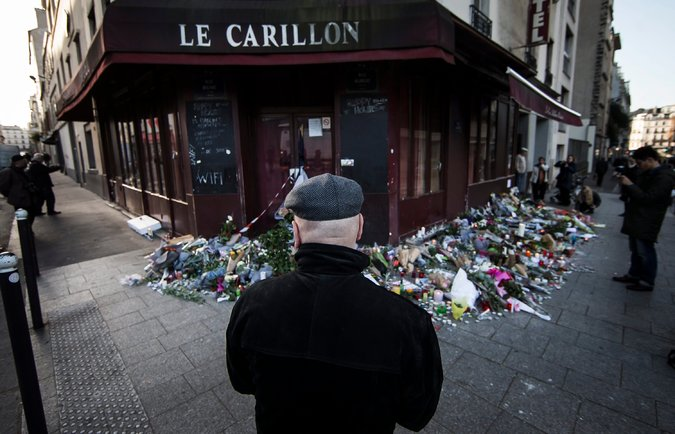

“Home, where all are welcome”: a commentary on the response to the Paris attacks

By Nisha Dillon
Home. There is no place like it and the consensus amongst us “romantic types” is that it is not actually a place at all in the most literal sense. Rather, home is a feeling that is hard to describe, but I will try my best. When I asked our friend Google what people think home means to them, one quote really resonated with me: “Home, where all are welcome” and I think that really encapsulates the meaning of being at home. This feeling is precious and one which, understandably, people are eager to protect — especially when it comes under attack.
On the evening of the 13th of November, Paris – a home of multiculturalism, art and European values – came under fire in a series of coordinated attacks carried out by the so-called Islamic State. With 130 people being killed and over 360 wounded, this event was a brutal way to end 2015 after having begun it in a similar manner with the Charlie Hebdo attacks in January. On the same day in November, similar attacks were carried out in Iraq and Beirut by IS and while these were equally shocking displays of brutality from the terror group, my focus will remain on France and their decision-making following the attacks.
Following the November attacks, France declared, and remains still, in a state of emergency in the name of protecting the public from a further assault. Furthermore, in direct response to IS, France increased plans for airstrikes on territory occupied by the group with support from other nations such as the United Kingdom. For some this was all a natural response and for a few it was not enough. Others though, like myself, remain questioning of why this is the protocol to follow. Yes, it is indeed hard to maintain a rational frame of mind when your way of life is under fire and irrationality can and does take over, but that does not mean that there should be no criticism.
Imagine you live in a shared student house with 12 people. When someone breaks into your home over the holidays and you return to a scene of destruction, what do you do? Say, for example, CCTV had footage that showed the perpetrator had blonde hair. Is your response to go and break into the houses of people with blonde hair and leave a similar scene? Or perhaps you know the rough address of where the culprit lives and you go and break into a few different houses in that area. Maybe one of your house mates has blonde hair, do you force your living companions to stay confined to their own bedrooms indefinitely? Sounds silly, I know, to reduce it to this, but in effect that is what the response was following November 13th, only on a much larger scale.
At the end of November, the emergency measures had already led to 1,233 searches and almost 300 people placed under house arrest and, concurrent with the state of emergency, these were all legally able to be conducted without warrants or the ability to conduct trials. While, given the circumstances, these actions are perfectly legal and some would argue are the most effective way to prohibit radicalisation and further attacks, I would argue: at what cost? Many French Muslims feel like they are second-class citizens as they have been the target of these emergency measures, seeing their businesses raided and mosques closed. They have borne the brunt of the house arrests with no explanation and some are unable to do basic tasks such as going to work due to having to “check in” with police every few hours.
While the state of emergency had been planned to be extended until the end of February of this year, in December a draft law being discussed could see the state of emergency lasting indefinitely. This is argued to be in the name of protecting the French population, but ironically it is at the expense of essential human rights. You know, those same human rights that protect the French population? As stated before, home is where all are welcome. Legal or not, it is a crying shame that in the fight to protect their home France has lost the essence of what home really means.
After the attacks occurred, the public response was that it was an attack on the French and, by extension, Western European way of life. We strive for democracy, human rights, freedom of speech and equality, to name just a few values we hold dear. The French tripartite motto is “Liberté, Égalité, Fraternité”, and yet in the face of barbarism we leave our values behind, pick up burning branches and pitchforks and bay for the blood of those we deem responsible — all in the name of protecting that home we walked away from.
This article was originally published Published on Issue #11 Winter Edition of The Bell Magazine
January 21, 2016 and was not edited by Kichaka. For the online link check it out here: https://universalisthebell.wordpress.com/2016/01/21/home-where-all-are-welcome-a-commentary-on-the-response-to-the-paris-attacks/